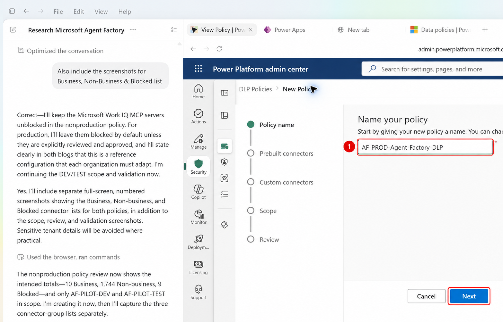
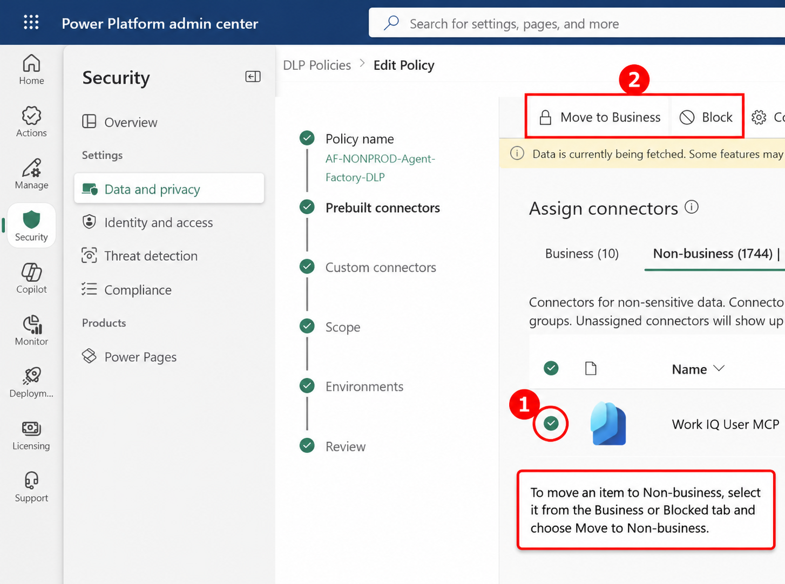
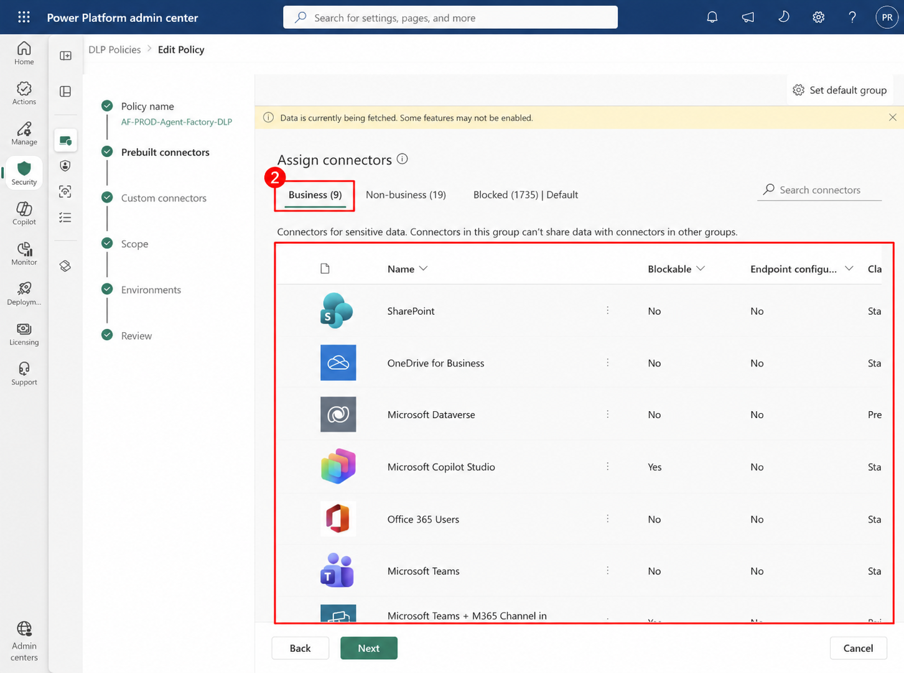
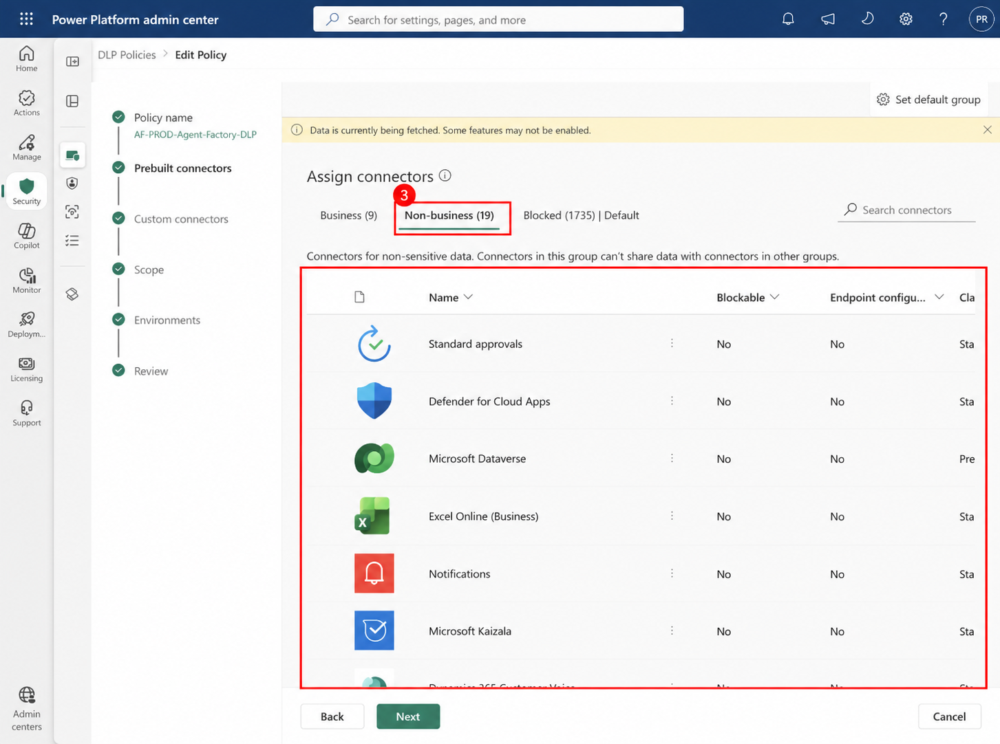
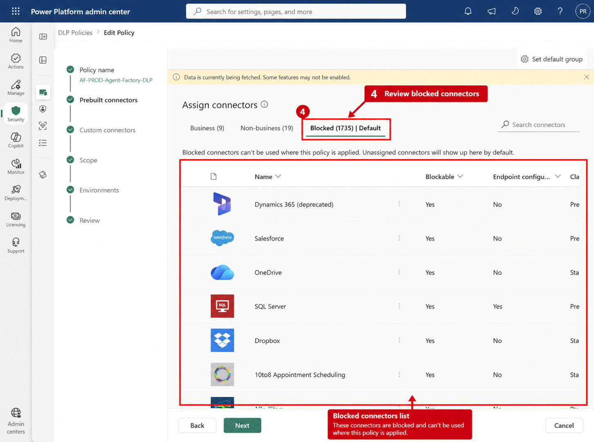
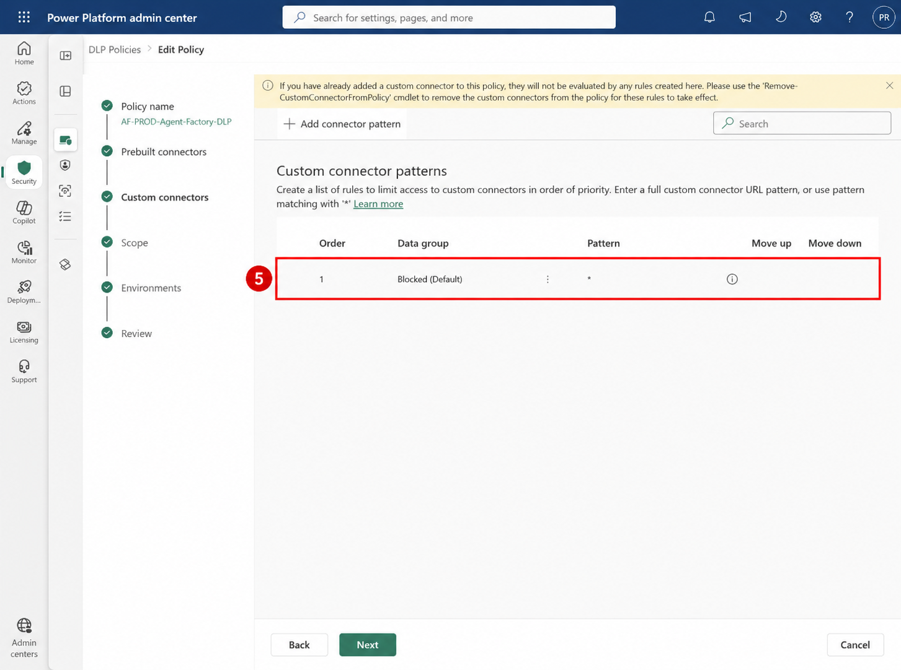
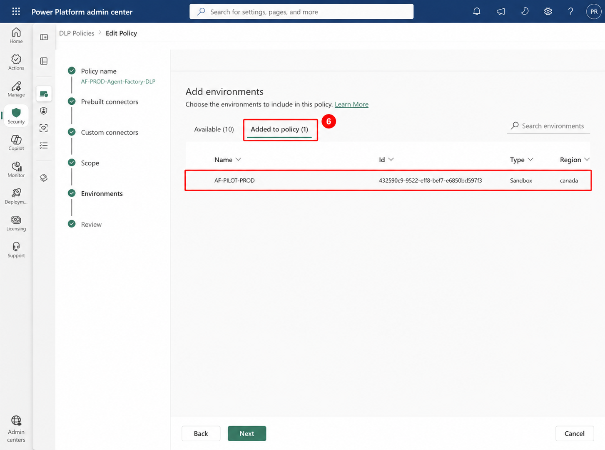
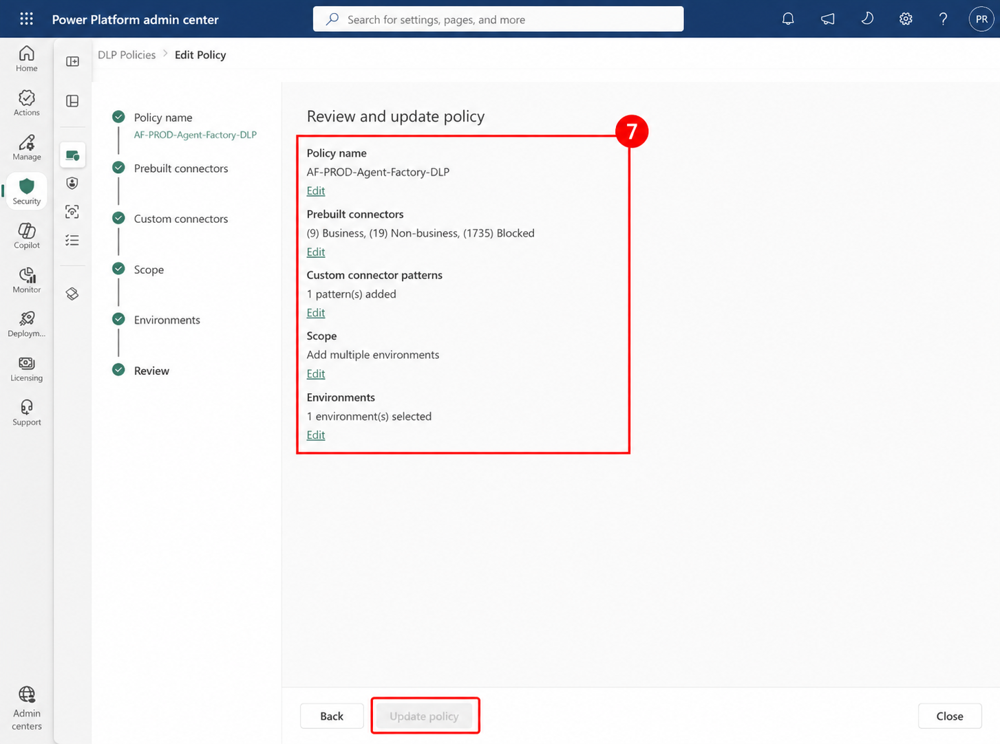
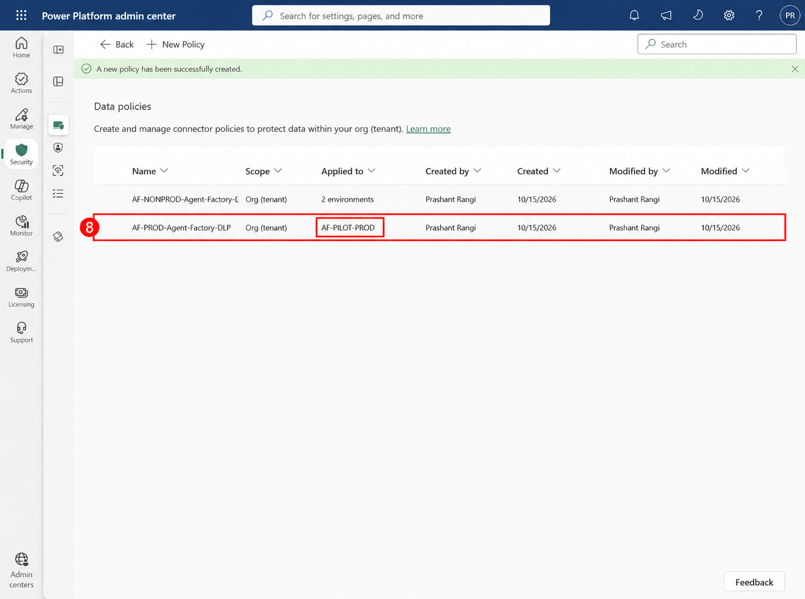

Sagar Rangi · 2026-10-15T15:05:21 · publish
Categories: Copilot Studio, Copilot Studio & Agent Factory
Tags: Agent Factory, Agent Governance, Copilot Studio
Important: Production and nonproduction DLP policies differ by organization. Adapt connector, endpoint, MCP server, knowledge source, HTTP, tool, trigger, and channel decisions to your data classification, risk appetite, business requirements, and compliance obligations.
A Power Platform data loss prevention (DLP) policy groups connectors according to how they may exchange data. Business and Non-business connectors are isolated from one another, while Blocked connectors cannot be used in environments covered by the policy. This creates a practical control plane around the data sources, tools, channels, HTTP capabilities, knowledge sources, and MCP servers available to makers and agents.
For an Agent Factory, a production policy is important because published agents require a smaller, explicitly approved set of data paths and deployment-safe defaults. The policy is not a universal allowlist: it is an organization-specific governance baseline that should be reviewed whenever connectors, agent capabilities, data classifications, or regulatory obligations change.
The production baseline follows an allowlist mindset. Work IQ and Microsoft MCP servers remain Blocked unless a documented business requirement, data-flow review, security assessment, and owner approval justify moving a specific capability. Some Microsoft-managed connectors are non-blockable and remain in Non-business; that is a platform constraint and should be recorded in the risk register.
In the Power Platform admin center, open Security > Data policies, create a new policy, and enter the production policy name shown below.

Open Prebuilt connectors, select the connector, tool, channel, knowledge source, or MCP server, and then use the action bar to assign it to the required group. The available action changes according to the item’s current group.

Move only approved connectors into Business. This reference list supports core Microsoft 365, Dataverse, Copilot Studio, Teams, and SharePoint-based agent scenarios.

Review connectors that remain Non-business because they are product-defined or non-blockable. They remain isolated from Business connectors and should be documented as platform exceptions.

Filter for blockable connectors, select them, and choose Block. Set Blocked as the default group so newly introduced connectors do not silently become available.

Edit the wildcard custom-connector pattern and assign * to Blocked. Replace the wildcard only with narrowly approved endpoint patterns when a production integration is authorized.

Choose Add multiple environments and add AF-PILOT-PROD only. Keeping the production policy separate avoids applying experimental nonproduction rules to published agents.

Confirm all three connector counts, the blocked custom connector pattern, the scoped environment, and the default group. The edit view uses Update policy; initial creation uses Create policy.

Validate both the configuration details and the applied scope. A policy that exists but targets the wrong environment does not provide the intended governance boundary.

A production DLP policy is a preventive guardrail for published agents and their data paths. A small allowlist, blocked-by-default connector posture, explicit environment scope, and documented exceptions reduce accidental exposure and make production behavior easier to audit. Reassess the policy whenever new connectors or business scenarios are introduced.